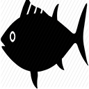

Gaming
Gaming has been an important part of my life ever since a very young age
My roots in gaming began in the early 2000's with the Sega Dreamcast, through the playstation 1, playstation 2, and so on
I currently play for the Division 1 League of Legends Team here at IIT
During 2016-2017 I was hired on a varsity coach for the RMU League of Legends team
Fishing
I have always loved fishing ever since I was as young as 5/6 years old and it is something I try to do as often as I can to this day
Fishing has helped me reconnect with my grandparents, and seeing how excited they get to come fishing makes me happy
After a hard week of work and school, taking a day to just go out on a lake to go fishing is a nice way to wind down
Shooting
Something about going to the range and firing off hundreds of rounds is very theraputic for me and it gives me a good activity to spend time with my dad
I have been hunting with my family ever since I was about 14 years old and it has been something that I look forward to every year
Shooting and Hunting are a key component of who I am and what I love to do